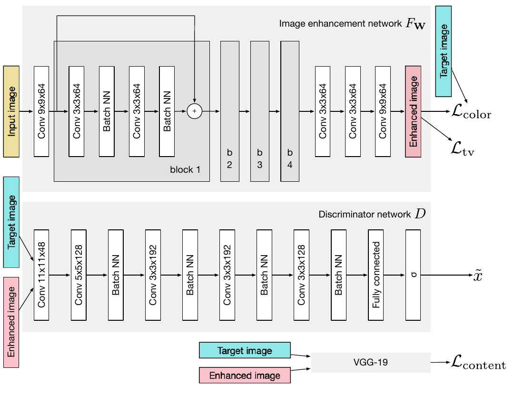
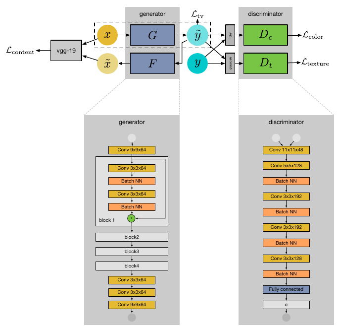
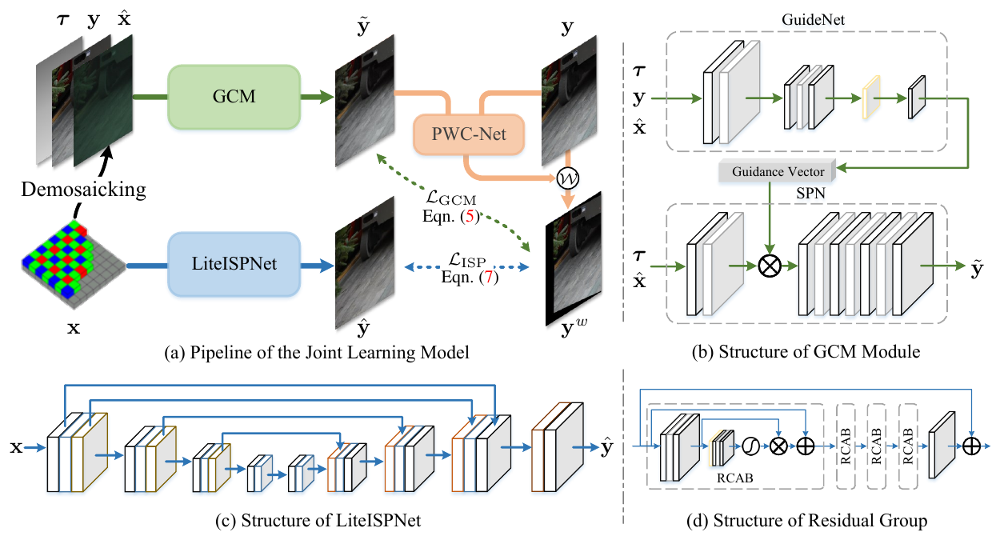
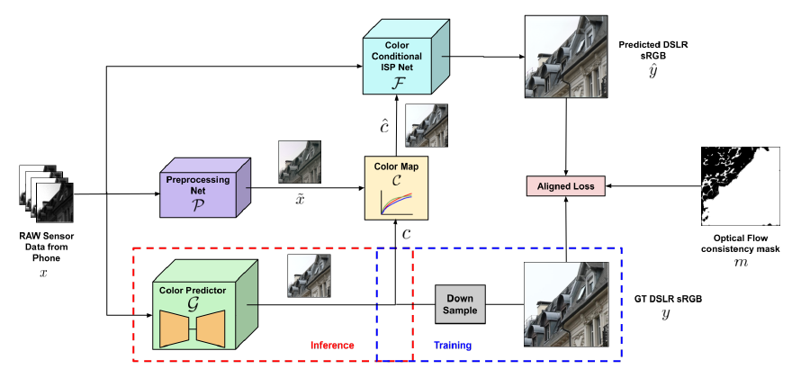
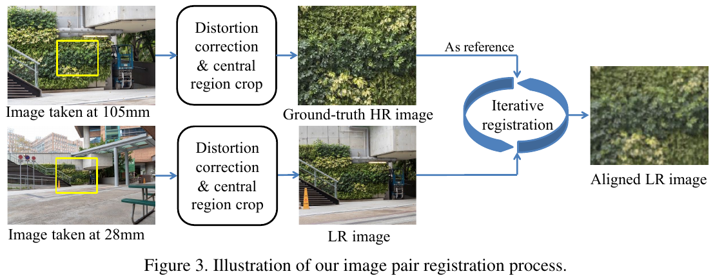
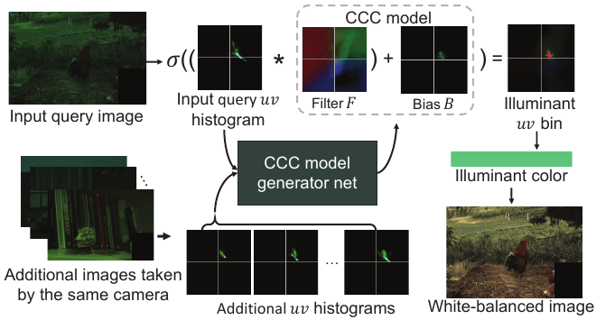
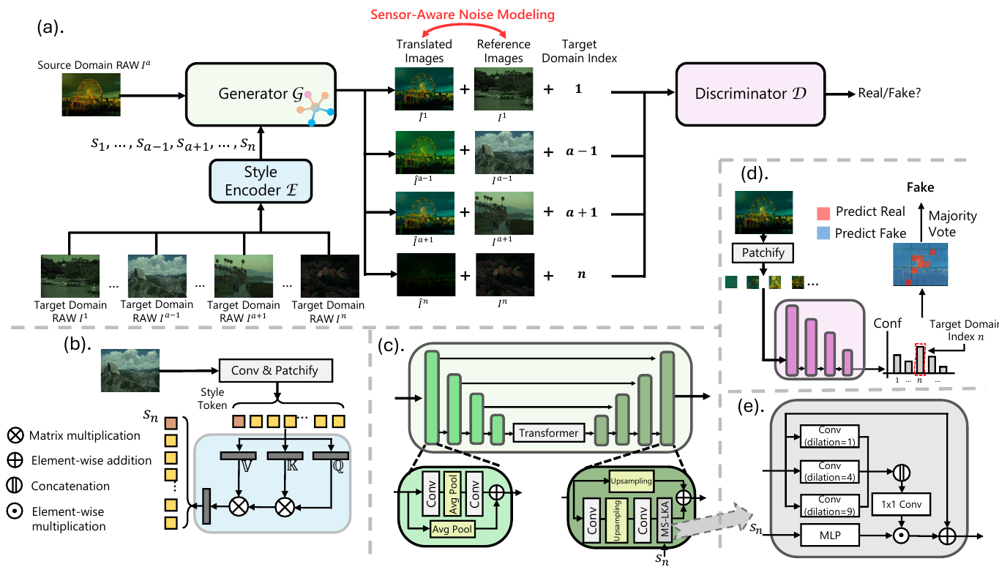

手机照片 → 相机画质：细节与质感迁移调研（2017→2026）
1. 概述与范围
目标：把 iPhone 拍的照片（优先从 Bayer RAW 出发）在整体细节和质感上转成某台目标相机拍出来的样子。本专项已经形成的思路有四条：
- 颜色走物理：用两台设备 DNG 里的 ColorMatrix / ForwardMatrix 经 CIE XYZ 求出 3×3，再按光源用色卡细化。
- 真实细节优先来自多帧：Bayer RAW 连拍加传统多帧合成。
- 生成模型只补高频纹理，而且强度可调。
- 最后交给目标相机的 ISP（Lightroom 的相机配置文件）出图。
本页按这条管线去读已有工作：每篇都问它在哪一步提供了证据、哪一步留下了缺口。
范围与分组：16 篇在本站做完精读的论文，分六组。
| 组 | 主题 | 工作 |
|---|---|---|
| A | 手机 → 单反画质（学习式 ISP / 增强） | dped-2017、wespe-2017、pynet-2020、liteispnet-2021、ispw-2022、diffraw-2024、ispdiffuser-2025 |
| B | 用更好的光学拍真值学细节 | zoom-to-learn-2019、realsr-2019 |
| C | RAW 域与造数据 | unprocessing-2018 |
| D | 跨相机颜色 | c5-2020 |
| E | 多帧 | handheld-mfsr-2019 |
| F | RAW 合成与跨相机 RAW 数据（2024–26） | raw-diffusion-2024、rawgen-2026、raw-degradation-sr-2026、merit-2026 |
F 组单独成组，没有并进 C 组。C 组的 Unprocessing 是 2019 年的手写逐点逆 ISP；F 组四篇是第二轮精读加进来的，都在回答同一个问题：目标相机的 RAW 训练数据从哪来。RAW-Diffusion 和 RawGen 用学习式逆 ISP 从 sRGB 造某台相机的 RAW；RAW-Degradation 把 Unprocessing 缺的空间退化（SR 核 + 噪声）逐设备实测出来；MERIT 做跨相机 RAW→RAW，并发布了含 iPhone 与尼康 Z5 同场景 RAW 的 MDRAW 数据集。四篇都落在 §6 第 (1)、(5) 步。
时间跨度是 2017–2026 的主干工作，加上 2023–2026 的一批相邻工作（§2.7，没有单独精读）。通用的扩散超分（一步化、视频超分）见 diffusion-sr-2026，本页不重复。
证据来源：16 篇的数字、论文与代码的出入都来自对应精读页（每页都对照了 PDF 和仓库）。ISPDiffuser 与 C5 的三处关键代码问题，以及 F 组里 RawGen 不加噪声、RAW-Diffusion 的 P2 权重与 rawpy 渲染、MERIT 的参考图选择与噪声 profile 顺序，在精读之外又单独打开代码复核过。§2.7 的 arXiv 号和会议信息已经核实过。凡是不在这两类来源里的工作，本页一律不引用。
2. 逐篇精要
每篇先给四行头（核心贡献 / 方法 / 关键结果 / 代码），再用一段话讲清楚怎么做的，最后附一张方法图。
2.1 A 组：手机 → 单反画质
DPED (ICCV 2017, arXiv:1704.02470) — ✅ 本站精读 dped-2017
- 核心贡献：第一次把「手机 → 单反」做成同步拍摄的配对监督任务，并把损失按「颜色 / 纹理 / 内容」拆成三路。三路损失都不怕配对图之间几像素的错位。
- 方法：用 4 个残差块的全卷积生成器处理手机 JPEG。颜色损失是重度模糊后的 L2，纹理损失来自只看灰度的判别器，内容损失取 VGG relu5_4，另加 TV。
- 关键结果：三台手机的 SSIM 都是第一（iPhone 0.9201），但 PSNR 与 Johnson 等基本持平（20.08 vs 20.32）。用户研究里「DPED vs 单反原图」的选择比是 50.38:49.62（BlackBerry）。消融中纯 MSE 的 PSNR 最高（20.56），画面却最软。
- 代码：官方 aiff22/DPED ·
train_model.py/utils.py。
怎么做的：三台手机（iPhone 3GS / BlackBerry / Sony）和佳能 70D 装在三脚架上同步触发。先用 SIFT + RANSAC 做整图单应对齐，再在 patch 级用互相关微调，互相关低于 0.9 的丢弃，最后得到每台手机约 14–16 万个 100×100 对齐 patch，残余错位 ≤5 px。整篇的设计都围绕「监督有错位」这个前提：逐像素 MSE 会被错位拉向均值，所以颜色只在模糊后比较（错位被模糊吸收），纹理交给不需要对齐的判别器，而且判别器只看灰度，避免它去动颜色，内容用对错位不敏感的深层特征来比。消融说明，去掉颜色项后 GAN 会把颜色带偏。代价有两个：输入是手机 ISP 已经降噪、锐化、压缩过的 JPEG，GAN 分不清噪声和细节，会把噪声一起放大；目标是 70D 的机内 JPEG，学到的画质和佳能的调色风格混在一起。

WESPE (CVPRW 2018, arXiv:1709.01118) — ✅ 本站精读 wespe-2017
- 核心贡献：去掉配对要求，只要一堆源相机照片加一堆任意高质量照片（内容无关，可以是 DIV2K）就能训练。
- 方法：正向生成器 G 加一个逆映射 F，内容损失算在输入域里，即 x 与 F(G(x)) 的 VGG 距离。两个判别器分工：D_c 看模糊后的颜色，D_t 看灰度纹理。
- 关键结果：在 DPED 上，SSIM 接近全监督（iPhone 0.90 vs 0.92），PSNR 低 2–4 dB（18.11 vs 21.35）。在 Huawei P9 上，用户研究对 APE（苹果「照片」一键增强）只有 0.44，说明对本来就不错的相机，收益接近零甚至为负。
- 代码：无官方实现；非官方 JuheonYi/WESPE-TensorFlow。
怎么做的：G 和 F 都是 4 个残差块、不改分辨率的全卷积网络。F 只有一个监督，就是「把 G(x) 还原成 x」，本身没有判别器，所以这里只有单向 GAN，和 CycleGAN 的双向结构不同。弱监督落在采样上：每个 batch 里手机 patch 与高质量 patch 随机配，不要求内容对应。这个设计省掉了拍配对的成本，但有一个和本专项直接冲突的副作用：循环一致要求 G 的输出保留足够信息，好让 F 还原出手机原图，噪声和压缩块也在其中。真正的去噪是多对一映射，不可逆，所以 G 要么不去噪，要么把噪声以低幅信号藏在输出里。复现日志里 phone-reconstructed PSNR 约 39 dB，G 的改动幅度只有约 29 dB，都和这个解释吻合。实际效果主要是白平衡、饱和度和对比度这类全局调色。

PyNET (CVPRW 2020, arXiv:2002.05509) — ✅ 本站精读 pynet-2020
- 核心贡献：用一个端到端 CNN 替代手机的整条 ISP，输入华为 P20 的 Bayer RAW，监督是佳能 5D Mark IV 的照片。同时发布 Zurich RAW-to-RGB（ZRR，约 4.8 万对 patch）。
- 方法：5 级倒金字塔，从 1/16 分辨率开始逐级训练。低层用 MSE 管全局颜色和亮度，高层用 VGG + SSIM 管纹理。
- 关键结果：ZRR 上 PSNR 21.19 / MS-SSIM 0.8620，只比第二名 SPADE 高 0.23 dB。MOS 2.77，高于 P20 原厂 ISP 的 2.56（单反 = 3.00）。处理一张 12MP 图在 V100 上要 3.8 s，模型 47.5M 参数。
- 代码：官方 aiff22/PyNET（TF1）与 aiff22/PyNET-PyTorch。
怎么做的：ZRR 沿用 DPED 的对齐套路，但几何变换只作用在单反图上，RAW 一个值都不改，凡是从 RAW 出发的配对数据都应该照这条做。网络每一级都有自己的输出头，先单独训最粗的一级，再逐级往上加。这样架构、损失和训练顺序三者对应同一种分工：低分辨率负责低频颜色，高分辨率负责高频纹理。问题在于颜色和纹理仍在同一个网络里学：RAW 只除以 1020，不减黑电平、不读 WB/CCM，光源和色彩矩阵都靠网络从图像内容里猜。所以换到 BlackBerry KeyOne 时，颜色大体能还原，曝光和细节却明显落后。PyNET 输出的锐度不如原厂 ISP。作者归因于 P20 的黑白副摄，但更直接的解释是回归损失遇到错位目标时会把输出平均掉。

LiteISPNet (ICCV 2021, arXiv:2108.08119) — ✅ 本站精读 liteispnet-2021
- 核心贡献：把 ZRR 的主要困难定位为「监督目标没对齐」，并找到光流失效的原因：手机 RAW 和单反图颜色差太大。所以先用一个只调色、不挪像素的 GCM 把颜色拉近，再求光流。
- 方法：GCM（GuideNet 读 GT 产出全局引导，SPN 是一串 1×1 卷积）把去马赛克后的 RAW 染成单反颜色，得到 ỹ。冻结的 PWC-Net 在 ỹ 与 y 之间求光流，把 y warp 回 RAW 坐标作为监督。GCM 和光流只在训练时存在。
- 关键结果：在 ZRR「Align GT with raw」口径下 23.76 dB / LPIPS 0.133，参数 11.9M，448² 推理 23.3 ms，参数约为 MW-ISPNet 的 40%、耗时约 20%。对齐带来 +0.27 dB，把 RCAB 从 4 个加到 20 个只多 0.03 dB。
- 代码：官方 cszhilu1998/RAW-to-sRGB ·
models/zrrjoint_model.py。
怎么做的：这里有一个关键的不对称：GuideNet 在训练时可以看 GT（「作弊」），因为 GCM 推理时会被丢掉。SPN 全由 1×1 卷积组成，「不挪位置」是结构上的硬约束，不用靠正则去调。监督 y^w 和输出 ŷ 在几何上属于同一个坐标系（手机 RAW），网络因此不必去「猜错位」。论文同时报了三种 GT 口径，并坦白在原始 GT 口径下几家差距很小（21.55 vs 21.42）。它没处理的部分是：mask 只抠掉 warp 后越出画面的像素，遮挡和视差区仍被当作有效监督，而这些区域恰好是纹理最密的地方；双线性 warp 本身也会让 GT 变软。

ISPW / Transform your Smartphone into a DSLR Camera (ECCV 2022, arXiv:2203.10636) — ✅ 本站精读 ispw-2022
- 核心贡献：把「每对训练图的颜色映射都不一样」显式建模成条件输入。ISP 网络 F(x, ĉ) 只负责去噪、去马赛克和细节，颜色由外部给定。
- 方法：训练时，ĉ 来自逐图闭式拟合的分 bin 仿射颜色映射 C（15 个 bin，约 180 个参数），它只能搬颜色、搬不了纹理。推理时，ĉ 由带 Perceiver 式全局上下文 Transformer 的 U-Net 颜色预测器 G(x) 给出。监督端用 PWC-Net 对齐，再加前后向一致性掩码。
- 关键结果：ZRR 25.24 dB / SSIM 0.879（LiteISPNet 23.81）。自建 ISPW 数据集（Mate 30 Pro RAW ↔ Canon 5D IV sRGB，200 组）上 25.05 vs 23.51。对齐 +4.06 dB，掩码 +0.62 dB。3×3 线性颜色映射 21.89 dB，比直接用模糊 GT 当条件（23.43）还差。PSNR 涨 1.43 dB，SSIM 只涨 0.006。
- 代码：4rdhendu/TransformPhone2DSLR 只有 README（唯一 commit
5ec1574），没有代码和权重。数据集链接 2026-10-20 实测 404。
怎么做的：手机 RAW 先经预处理网络得到去噪后的 x̃。C 在 x̃ 上逐像素拟合一个「把手机颜色变成 GT 颜色」的分 bin 仿射映射，得到 ĉ。ĉ 的每个像素只依赖 x̃ 自己的值，所以结构上保证 F 拿不到 GT 的空间细节。这比 ColorBlur（希望模糊能挡住细节）更严格。训练时还对 GT 做随机色相、饱和度、亮度抖动，C 拟合出的 ĉ 随之变化，F 于是被训成「严格照 ĉ 上色」的细节网络，这正是本专项想要的接口。推理时的 G 仍是一个从 RAW 回归单反颜色的黑盒：把 ZRR 和 ISPW 交叉测试，颜色明显失败；推理时用 C 做正则，只值 0.05 dB。另外 ISPW 的单反侧只有 sRGB，没有 RAW，所以没法在线性空间做物理颜色对齐。

DiffRAW (AAAI 2024, DOI 10.1609/aaai.v38i7.28494，无 arXiv) — ✅ 本站精读 diffraw-2024
- 核心贡献：第一次把扩散模型用在「手机 RAW → 单反 sRGB」上，分工是 RAW 管结构、确定性 sRGB 锁颜色和位置、扩散只补细节。
- 方法：两个条件，w = 手机 RAW，c = 颜色-位置保持条件。训练时 c = D²(y)（单反图的两轮合成退化，与目标天然对齐），测试时 c = LiteISPNet(w)。DTDM 前向过程边加噪边从 y 往 x 退化，推理从「加噪后的 LiteISPNet 输出」出发，100 步以内完成。
- 关键结果：ZRR 原始 GT 上 LPIPS 0.145（LiteISPNet 0.187）、FID 15.10（17.04）。PSNR 21.31 反而低于 LiteISPNet 的 21.55。ILNIQE 42.65 比单反真值本身的 44.13 还「好」。
- 代码：没有官方代码。
怎么做的：最值得借的设计是「条件和目标对齐」：训练时 c 来自 y 的退化，两者像素级对齐，网络学会「位置和颜色跟着 c 走」；测试时把 c 换成和手机输入对齐的 LiteISPNet 输出，坐标系就自动切过去，全程不需要光流 warp。步数是一个「保真 ↔ 生成」旋钮：步数越少，有参考指标越好、无参考指标越差，主表用的 93 步是折中。缺口也在这里：x_train 是 Real-ESRGAN 式的合成退化，x_test 是回归平滑的输出，两者不同分布，D² 的参数也没公开。RAW 条件到底贡献多少，没有定量消融。测试时 RAW 信息已经经过 G 进入了 c，DiffRAW 很可能大部分时候等价于在 LiteISPNet 输出上做一次扩散复原。

ISPDiffuser (AAAI 2025, arXiv:2503.19283) — ✅ 本站精读 ispdiffuser-2025
- 核心贡献：把 RAW→sRGB 拆成「灰度潜空间扩散补纹理」和「以 RAW 为条件的直方图上色」两半。理由是扩散擅长高频，却在颜色、曝光这类低频量上有偏。
- 方法：同一个编码器把灰度 GT 和 RAW 压到 1/4 潜空间。TADM 以 RAW 特征为条件，在灰度潜空间里扩散，加 Canny 边缘损失 L_tel。HCCM 从 RAW 特征预测颜色「直方图」，再用 cross-attention 给灰度特征上色，加颜色一致性损失 L_ccl。
- 关键结果：ZRR 对齐 GT 上 24.09 / 0.881 / LPIPS 0.111，MAI（IMX586 → 富士）上 25.64 / 0.894 / 0.071，都略优于 FourierISP（领先 0.12–0.27 dB）。448² 推理 490 ms。表 3 中通用上色器（DDColor 18.83 / ColorFormer 19.24）比以 RAW 为条件的 HCCM（20.93）低 1.7–2.1 dB。
- 代码：官方 RenYangSCU/ISPDiffuser。发布版的两项新损失都不起作用，评测取 best-of-10（§5）。
怎么做的：扩散的对象只有 64×64×3 的灰度潜变量，4 张 2080Ti 就能训，也不依赖另一个 ISP 网络的输出当条件。全文最站得住的证据是表 3：同样的灰度扩散，接一个看不到 RAW 的通用上色器就掉约 2 dB，说明颜色必须来自传感器测量，不能靠语义先验去猜。但「解耦」在代码里并不彻底：解码器从 RAW 编码器接了两条 256/128 通道的跳连（basic_model.py:L263-L272），颜色乃至细节都可以绕过 HCCM 和扩散，直接从这里进入输出。所谓的「直方图」在代码里是一个 256×256 的可学习通道混合矩阵。表 3 的「+HCCM」（20.93）和表 4 的完整模型（21.77）本应是同一配置，却差 0.84 dB，论文没有解释。

2.2 B 组：用更好的光学拍真值
Zoom to Learn, Learn to Zoom (CVPR 2019, arXiv:1905.05169) — ✅ 本站精读 zoom-to-learn-2019
- 核心贡献：数字变焦应该直接吃 12–14 bit 的 Bayer RAW。真值从光学变焦来：长焦端拍的 RGB 当短焦端 RAW 的 GT，由此建成 SR-RAW（500 组序列）。错位用 CoBi 损失来容忍。
- 方法：Bayer 打包成 4 通道送进 SRResNet，用 CoBi（Contextual Loss 加空间坐标项）处理 40–80 px 的错位。白平衡不交给网络，按 EXIF 在输出上施加。
- 关键结果：4X PSNR 26.88 / LPIPS 0.190，比最好的 RGB 基线高 3.75 dB。受控实验里网络、损失、GT 都不变，只换输入：真 RAW 比 8-bit JPEG 高 4.54 dB，比合成 RAW 高 2.90 dB。用 50 对 iPhoneX–单反数据微调 5000 步即可适配新传感器（只有定性图）。
- 代码：官方 ceciliavision/zoom-learn-zoom。只开源了推理、对齐和 CoBi 本体，训练脚本没放出。
怎么做的：一支 24–240mm 变焦镜头对同一场景拍 7 档焦距，FOV 匹配后，用仿射 ECC 预对齐（代码是 MOTION_AFFINE，论文写的是 Euclidean），只变换 GT。错位有三个来源：镜头伸缩带来的视差、景深不同、锐利边缘与模糊边缘本来就无法精确对齐。作者没有假装能对齐，而是把容错放进损失。为了让各档景深一致，全部用 f/20 或更小的光圈拍，于是「光学真值」本身就被衍射软化了，艾里斑约 27 µm，远大于像素间距。这对本专项是一条实操提醒：给目标相机拍 GT 时，应该在景深够用的前提下选镜头的最佳光圈。Table 2 是全文最硬的证据，它把「RAW 格式的价值」和「真实传感器统计的价值」分开量化了。

RealSR (ICCV 2019, arXiv:1904.00523) — ✅ 本站精读 realsr-2019
- 核心贡献：用同一台单反拧变焦环拍出真实的 LR/HR 配对（595 对，Canon 5D3 + Nikon D810），证明训练数据比网络重要得多。
- 方法：105mm 拍 HR，50/35/28mm 拍 LR，薄透镜公式给出初始缩放，「仿射 + 全局亮度 α,β」的鲁棒 IRLS 由粗到细配准到像素级。模型侧是 LP-KPN：Y 通道三层拉普拉斯金字塔，每层预测逐像素 5×5 核。
- 关键结果：同一架构把训练数据从 BD 换成 RealSR，×2 涨 +0.96 到 +1.03 dB；MD（更复杂的合成退化）相对 BD 只多 0.01–0.03 dB；把网络从 VDSR 换到 RCAN 只涨 0.28 dB。LP-KPN 比 RCAN 只高 0.02–0.04 dB，参数 5.73M vs 32.71M。
- 代码：官方 csjcai/RealSR（Caffe + MATLAB 配准）。
怎么做的：配准环里只放全局、低自由度的光度项，颜色差异因此不会被误当成几何错位。代码最后用的是三通道全协方差的 color_transfer，相当于一个 3×3 颜色仿射。这个思路可以直接迁移：在线性 RAW 域里用 DNG 矩阵或色卡得到的 3×3 当光度项。KPN 的输出只是输入邻域的线性组合，不会产生幻觉，也不改颜色，适合做「保真主干」。它的局限同样明显：LR 和 HR 出自同一传感器、同一 ISP，退化只覆盖光学采样这一种；跨相机测试用的两台机器配同型号镜头，0.3 dB 的掉点不足以说明对手机也能泛化；手机图只有定性截图。

2.3 C 组：RAW 域与造数据
Unprocessing (CVPR 2019, arXiv:1811.11127) — ✅ 本站精读 unprocessing-2018
- 核心贡献：把网上的 sRGB 照片按相机 ISP 的反向顺序逐步「解处理」回 RAW，加上信号相关的泊松-高斯噪声，造出逼真的 RAW 去噪训练对。
- 方法：依次做逆 smoothstep 色调曲线 → 逆 gamma → sRGB→相机 RGB 的 CCM（4 台相机矩阵的随机凸组合）→ 带高光保护地除掉白平衡与数字增益 → 抽 RGGB 马赛克，再按 ISO 联合采样 shot/read 噪声。网络输出和真值都过一遍简化的正向 ISP，在 sRGB 空间算 L1。
- 关键结果：DND 真实噪声基准上 raw 48.89 / sRGB 40.35 dB，比 N3Net 高 1.33 / 2.03 dB，耗时 22 ms。消融：换成 AWGN 掉到 38.65；不做 unprocess 掉 1.33 dB；不做 unprocess 而把网络通道 ×4，仍差 1 dB，耗时 177 ms。
- 代码：官方 timothybrooks/unprocessing（亦见 google-research 仓库）。
怎么做的：每一步逆 ISP 的参数都从目标数据集的元数据统计出来，方法本身就是「对着目标相机做校准」。这让它对本专项有一个反向用法：把目标相机的成片当作 sRGB 训练图，用 iPhone 的 ColorMatrix、AsShotNeutral 分布和噪声标定去逆处理，得到像素级对齐的「iPhone 风格 RAW → 目标相机成片」训练对，没有双机配对的错位问题。它的边界也很清楚：逆 ISP 每一步都是逐点运算，没有 PSF、OLPF、去马赛克、锐化这类空间操作的逆，伪 RAW 的纹理直接继承自 sRGB 原图。对去噪够用，对「质感 / 细节」类任务恰好是缺口，要补就得显式加入 iPhone 的 PSF 和下采样。另外，iPhone 的 Smart HDR / Deep Fusion 成片是多帧、局部处理的结果，不能用一条全局曲线逆回去。

2.4 D 组：跨相机颜色
C5 / Cross-Camera Convolutional Color Constancy (ICCV 2021 Oral, arXiv:2011.11890) — ✅ 本站精读 c5-2020
- 核心贡献：跨相机自动白平衡。一个模型用多台相机训练，部署到没见过的传感器上，只要再看几张同一台相机拍的无标注照片就能工作。
- 方法：在卷积色彩恒常（CCC）外套一层超网络。把待处理图和 m−1 张附加图都转成 log-chroma 直方图，多分支 U-Net 跨分支做 max-pool（置换不变），现场为这台相机生成 CCC 的滤波器 F 和偏置 B。附录的增广把源相机 RAW 经 DNG 色彩矩阵转到 CIE XYZ，再映射到目标相机空间。
- 关键结果：留一相机协议下，Cube+ 1.92° / INTEL-TAU 2.52° / NUS 1.77°，优于 SIIE、FFCC，最差 25% 的改善最明显（Cube+ 4.44 vs FFCC 6.31）。附加图换成来自另一台相机时，误差从 2.24° 升到 2.97°。只用合成数据训练 FFCC 时，经 XYZ 中转 3.04°，直接 RAW 对 RAW 映射 3.30°。模型 2 MB，GPU 上 7 ms。
- 代码：官方 mahmoudnafifi/C5（HEAD
dca9236）。apply_cst有原地覆盖 bug（§5）。
怎么做的：C5 的推理头就是简化版 FFCC，网络只负责「调参」，平移等变和可解释的热力图都保留了下来。它的增广链（附录 D）几乎就是本专项颜色方案的完整实现，还额外做了一个关键决定：物体颜色走 3×3，光源色不走矩阵，而是从目标相机自己的光源轨迹（K 近邻实拍样本）里取。原因是两台传感器都不满足 Luther 条件，用 3×3 去「推」白点并不可靠。它的边界是输出只有一个全局对角增益，解决的是「光源是什么」，不管「颜色长什么样」：同色异谱、色域差、饱和色偏差都要靠 CCM/CST 解决。另外它的训练相机几乎全是 DSLR，手机只有 INTEL-TAU 里的 Sony IMX135 一台。

2.5 E 组：多帧
Handheld Multi-Frame Super-Resolution (ACM TOG / SIGGRAPH 2019, arXiv:1905.03277) — ✅ 本站精读 handheld-mfsr-2019
- 核心贡献：不做去马赛克，把一组手持连拍的 Bayer RAW 当作同一连续信号在不同亚像素偏移下的稀疏采样，自然手抖提供的偏移已经足够随机。Pixel 3 Super-Res Zoom 和 Night Sight 默认用它合并。
- 方法：块匹配加 3 次 Lucas-Kanade 配准。由结构张量决定各向异性高斯核，逐通道做核回归，把 R/G/B 直接累加到任意分辨率的输出网格。用「局部方差 vs 颜色差」的统计鲁棒性模型剔除运动和配准失败的区域。整个过程在线累加。
- 关键结果：合成 Kodak / McMaster 上 42.86 / 41.26 dB，比单帧 DeepJoint 高 3.2 / 3.7 dB（多帧对单帧，信息量不对等）。真实连拍用户研究里，对 Hasinoff+DeepJoint 的偏好率 0.792。Adreno 630 上 12MP 每帧约 100 ms。超分上限约 1.5–2×，由 Pixel 3 主摄约 1.5 的采样比锁定。
- 代码：Google 没有官方代码；非官方复现 Jamy-L/Handheld-Multi-Frame-Super-Resolution（IPOL 2023）。
怎么做的：「失败时安全」是贯穿全文的设计目标。对齐向量被扰动到 50% 坏 tile 时，算法几乎只合并基准帧，画质退回单帧去马赛克的水平，但不出融合伪影。所有参数只由基准帧估出的 SNR 驱动。它对本专项有两个直接用处。第一，合并输出是相机原生色彩空间的线性 RGB，还没做白平衡、CCM 和色调映射，物理颜色对齐正好接在这里。第二，每个输出像素的累计权重（den）和鲁棒性掩码记录了「这里有多少帧真实样本支撑」，可以当作生成模型的逐像素许可证。它自己承认的盲区是小幅高频运动（水波、轻微摆动的树叶）：一旦被「正确」对齐，统计模型就分不出它和混叠，会融合出特征性伪影；大幅运动则被拒绝，退回单帧。

2.6 F 组：RAW 合成与跨相机 RAW 数据（2024–26）
RAW-Diffusion (WACV 2025, arXiv:2411.13150) — ✅ 本站精读 raw-diffusion-2024
- 核心贡献：把「sRGB → 某台相机 RAW」的逆 ISP 做成 RGB 引导的条件扩散，每台相机训一个模型，几十对样本就够用。
- 方法：RGB 经 4 个残差块的 EDSR 抽特征，以 SPADE 式逐像素 γ/β 调制 U-Net 的瓶颈和解码器（编码器只看加噪 RAW）。直接预测 x₀，末层 tanh，损失为 MSE + L1 + 对数 L1。
- 关键结果：四个单反数据集上 PSNR 都是第一（FiveK Nikon 30.05，只比 ISPLess⁺ 高 0.22 dB，在种子方差之内；NOD Nikon 44.93，+2.36 dB），比手写逆 ISP（UPI）高 2.4–7.8 dB。25 张训练图与全量持平。DDIM 6 步与 1000 步持平，2 步仍有 44.19 dB。把 BDD100K 转成伪 RAW 后，Faster R-CNN 夜间 AP 从 18.2 提到 26.5，但直接混入 RGB 就已经到 24.5。
- 代码：官方 SonyResearch/RAW-Diffusion（commit
5fbf662），无预训练权重。损失多乘了论文没写的 P2 权重，训练 RGB 是 rawpy 默认渲染（§5）。
怎么做的：预处理时，RGB 由 rawpy.postprocess() 按默认参数从同一张 RAW 渲出，再做 2× 面积下采样，与 RGGB 打包 RAW 像素对齐。所以它学到的是 LibRaw 那条全局、无锐化、无降噪 ISP 的逆，而不是机内 JPEG 的逆，训练和推理时的 RGB 分布并不相同。几个 RAW 专用的选择都有消融支撑：RGB 拼在输入端比逐层 SPADE 低 1.0–1.5 dB，去掉 tanh 掉 2.2–5.2 dB；ε 预测只有 5.55 dB，但精读页指出这可能是 ε 目标与 tanh、logL1 冲突造成的代码问题。最值得注意的是它的「生成」性质：x₀ 预测加像素损失，再加一个偏向高噪声步的 P2 权重，而 RGB 又几乎唯一决定答案，结果 DDIM 2 步和 1000 步只差 0.8 dB。模型实质上是一个带迭代修正的条件回归器，输出接近「给定 RGB 的条件均值」。它没有 ISO 或噪声输入，黑电平以下的读出噪声在归一化时还被截成了 0。对本专项而言，它是比 Unprocessing 更准的颜色 / 色调逆映射，但不产生目标相机的噪声和质感，输出的纹理来自输入照片。

RawGen (ECCV 2026, arXiv:2604.00093) — ✅ 本站精读 rawgen-2026
- 核心贡献：用「多对一」训练数据逆 ISP：同一张 DNG 渲染出多种修图风格的 sRGB，全部对齐到同一个 CIE XYZ 锚点，让模型学会去掉未知的修图。落到具体相机这一步交给目标相机一张 DNG 里的色彩矩阵，换相机不用重训。
- 方法：FLUX.1-Kontext 冻结，只训 rank-64 LoRA，以 sRGB 潜变量为上下文，用整流流去噪出 XYZ 潜变量；VAE 解码器全量重训，直接输出 XYZ。XYZ → 目标相机 RAW 是一个确定性映射：ForwardMatrix / ColorMatrix 按色温插值，再乘光源增益。另有文字 → RAW（T2R）入口。
- 关键结果：FiveK 五位修图师风格上 PSNR 23.20–24.35 dB（在 gamma 编码的 XYZ 空间算），比 CIE XYZ Net 高 3.31–5.25 dB。同一骨干只用一对一数据训练时与 CIE XYZ Net 打平（Expert A 19.57 vs 19.60），所以收益全部来自数据构造。下游：光源估计 3.14°（Graphics2RAW 4.21°，真实数据 3.02°）；RAW 去噪 ISO 1600 下 50.63 dB，高于真实数据训练的 49.80。
- 代码：官方 DY112/RawGen（commit
39f959b），LoRA 与解码器权重已发布，受 FLUX.1 [dev] 非商用许可约束，需要 ≥40 GB CUDA 显存。发布版不加噪声，输出固定 1024²（§5）。
怎么做的：锚点由软件 ISP 跑到「白平衡 → 去马赛克 → 转 XYZ」为止，做了暗角校正、没做降噪，再从原片缩到 1024²。变体在同一条 ISP 上随机化 R/B 增益（×0.7–1.3）、逐通道色调曲线和对比度，全部是全局、逐像素的操作。Kontext 原本靠文字指令描述编辑，这里文字通道是空串，上下文 token 与目标 token 共用同一套位置编码，「去修图、转 XYZ」的知识全在 LoRA 里。这个设计把可学习的部分限定在「去掉未知修图」，把「落到哪台相机」做成可解释的物理映射，换相机只需一张带双光源 ColorMatrix + ForwardMatrix 的 DNG。代价同样清楚：训练变体没有局部色调映射、锐化、降噪和 JPEG，所以逆不掉手机成片里的局部处理；输出没有传感器噪声、PSF 和暗角，CFA 是在平滑 RGB 上的理想抽样。对本专项最关键的一点是：同一张 XYZ 分别映射到 iPhone 和 Z5，两份 RAW 满足 IZ5 = IiP · DiP−1 FiPT FZ5−T DZ5，只差一个 3×3 线性变换，纹理、噪声、锐度完全相同。用它造的「质感配对」没有任何质感监督信号。

RAW-Degradation / RAW-Domain Degradation Models for Realistic Smartphone Super-Resolution (CVPR 2026, arXiv:2603.12493) — ✅ 本站精读 raw-degradation-sr-2026
- 核心贡献：把超分训练数据的退化从「随机退化池」换成逐设备实测。一个 SR 核同时装下镜头 PSF、像素积分和下采样，按视场位置、按 R/G/B 通道分别标定；噪声按 ISO、按 Bayer 通道标定。
- 方法：暗室里让手机拍显示器上的两电平随机图案（每张 100 帧平均，格雷码定位，白场 / 黑场线性化），按 128×128 视场块联合优化三个 21×21 的 4× 核和单应，损失在马赛克 RAW 域算 ℓ1，不加先验。噪声用色卡连拍拟合异方差高斯，7 档 ISO 之间做二次拟合。用这些核和噪声把线性 RGB 逆处理成 LR RAW，训练一个只用 ℓ1 的 RRDBNet。
- 关键结果：单设备 MTF50 提升最多 2.00（S24U Tele 2；KernelGAN 1.62、MANet 0.29），PSNR 却只比最好基线高 0.05–0.12 dB。跨设备（9 个摄像头里 7 个进训练池，留出 2 个）：Pixel 6 Main 32.41 dB / rMTF50 1.19（Real-ESRGAN 31.75 / 0.38），Mi 11 Main 36.11 / 0.42（RAWSR 35.71 / 0.14）。
- 代码：SamsungLabs/raw_sr_degrdation_models 只有一个空 README（唯一 commit
ca6369c），承诺的核与噪声参数尚未发布。
怎么做的：显示器到传感器的距离调到 M = 4N，天然得到 4× 配对。随机图案每个通道只取 0 和最大值，显示器的非线性就只剩两个点需要知道，一张白场、一张黑场同时解决线性化和暗角。每块的观测量约是未知数的 250 倍，所以不加非负、归一、稀疏先验也能解，代价是个别块会出现条纹伪影。合成分四步：按黑白电平映射到传感器量程 → 标定核卷积并 ↓4 → 按 CFA 马赛克 → 除掉白平衡增益后按 HG 模型加噪。它和 Unprocessing 正好互补：Unprocessing 有 CCM 和色调的逆、没有空间退化；本文有实测空间核和逐设备噪声、没有 CCM 逆。网络只用 ℓ1，MTF 的提升不是 GAN 画出来的。需要打折扣的地方有三处：没有消融，核与噪声各贡献多少不知道；没有和真实配对训练比；留出设备 Pixel 6 Main 与训练池里的 Pixel 9 Pro Main 规格相同（1/1.31"、1.2 µm、50MP），规格差别更大的 Mi 11 上，领先缩到 PSNR +0.40 dB、MTF50 +0.08。另外标定和定量评测共用同一台显示器。

MERIT (CVPR 2026, arXiv:2603.20836) — ✅ 本站精读 merit-2026
- 核心贡献：一个模型做任意两台相机之间的无配对 RAW→RAW 转换（StarGAN v2 式「生成器 + 目标相机风格码」），并发布 MDRAW：五台设备（S23 Ultra、华为 P30、iPhone 13 Pro、尼康 Z5、佳能 T6）的 Bayer RAW，无配对 519 张，另有 57 组同场景配对（每组 5 台各 1 张）。
- 方法：4 通道打包 RAW 进生成器，风格编码器从目标相机的参考图里提取 64 维风格码。在 StarGAN v2 之上加三样：SANM（在平坦块上用 MAD 估方差、按亮度分箱，对齐目标相机的「噪声方差—亮度」曲线）、解码器里由风格码调制的多空洞大核门控 MS-LKA、循环 SSIM 损失。
- 关键结果：Afifi 的 S9 / iPhone X 数据集上 35.29 / 31.90 dB，比次优高 5.56 / 3.45 dB，平均 33.60 dB（消融四档：32.37 → +SANM 32.71 → +MS-LKA 33.20 → +循环 SSIM 33.60）。MDRAW 20 个方向平均 28.42 dB，只比 Xie et al. 高 0.19 dB；iPhone→尼康 27.68 dB，与 Xie et al. 的 27.68 打平。
- 代码：官方 WJ-Huang/MERIT-Multi-domain-Efficient-RAW-Image-Translation（HEAD
bfe5c6e），无权重。评测参考图按 GT 挑选，默认噪声 profile 错配相机（§5）。
怎么做的：对本专项来说，MERIT 的价值主要不在方法，而在 MDRAW 和 SANM 这把尺子。方法上，颜色完全交给网络：AdaIN，加上代码里一组论文没有披露的逐相机 4 通道对角增益。这组增益不随光源变化，也没有 3×3 的交叉项，和 C5 的物理路线相反。SANM 只对齐平坦区的方差—亮度一条曲线，每台相机一条、不分 ISO，梯度只经过 MAD 选中的少数像素。头条的 +5.56 dB 出自 Afifi 数据集，那里的 GT 是源图经色卡多项式映射得到的，带的是源相机的噪声和纹理，只能测颜色；到了真实拍摄的 MDRAW 上，三种方法都挤在 28 dB 附近。MDRAW 本身也有边界：配对 patch 由 LoFTR + RANSAC 选点，但求出的单应被丢掉，只做平移裁剪；尼康域在预处理里经过约 0.75 倍的面积下采样；镜头、焦距、ISO 都没有记录；黑白电平和 CFA 写死在代码里。它是目前唯一公开的「iPhone Bayer RAW ↔ 无反 RAW」同场景配对，但规模和对齐精度只够做小规模实验。

2.7 相邻工作（未单独精读）
下面这些工作没有单独精读，但它们都落在本专项管线的某一步上。arXiv 号和会议信息均已核实，内容以摘要层面的定位为准。
- RDDM（arXiv:2508.19154）：直接在 RAW 域做扩散修复，用 RAW 域 VAE 加多拜耳排列的 LoRA。生成发生在线性 RAW 里，正是本专项「RAW→RAW、再交给目标 ISP」需要的形态。
- LDM-ISP（arXiv:2312.01027，ICRA 2025）：冻结 Stable Diffusion，用小波驯化模块把大模型先验接到学习式 ISP 上。代表「冻结大先验、只训适配」这一路。
- DiffuseRAW（arXiv:2402.18575）：在 RAW 数据上微调潜扩散模型，用一个生成模型替代整条多阶段 ISP，面向暗光 RAW → 成片。可与 DiffRAW、ISPDiffuser 并列参照。
- DarkDiff（arXiv:2505.23743）：把预训练扩散模型「改任务」成相机 ISP 的一步，做暗光 RAW 增强。暗光正是单帧手机 RAW 信息最不够的工作区间。
- BurstGP（arXiv:2604.23508）：RAW 连拍超分加扩散生成的修正量，用 λ 控制修正强度。这是目前与「多帧给真实细节 + 强度可控的生成补高频」最接近的公开工作。
- Efficient Burst Super-Resolution with One-step Diffusion（arXiv:2507.13607，NTIRE 2025）：连拍超分接一步扩散，把生成补高频的代价压到一次前向。
- Rawformer（arXiv:2404.10700，ECCV 2024）：无配对的一对一 RAW→RAW 跨相机转换，在 RAW 域延续了 WESPE 的「无配对」思路，也是 merit-2026 在 Afifi 数据集上的主要基线。
- Beyond Calibration / NPM（arXiv:2506.08650）：物理信息约束的 RAW→RAW 跨设备映射，介于纯物理颜色矩阵和纯学习之间。
- cmKAN / Color Matching Using Hypernetwork-Based Kolmogorov-Arnold Networks（arXiv:2503.11781，ICCV 2025，代码 gosha20777/cmKAN）：超网络生成空间变化的权重图，去控制 KAN 的非线性样条，做源 → 目标颜色分布的匹配，有监督、无监督都支持。同时发布一个两台相机拍摄的配对数据集，覆盖 raw-to-raw、raw-to-sRGB、sRGB-to-sRGB 三种颜色匹配任务。它是专项物理颜色管线（DNG 矩阵 + 色卡）最直接的学习式对照，它的双相机配对数据也是 MDRAW 之外又一个跨相机 RAW 数据来源。
- RAW-Flow（arXiv:2601.20364）：RGB→RAW 重建，在潜空间用确定性 flow matching 学 RGB 与 RAW 之间的传输。与 raw-diffusion-2024、rawgen-2026 同属「学习式逆 ISP」，可用来造 RAW 训练数据。
- Learned Lightweight Smartphone ISP with Unpaired Data（arXiv:2505.10420，CVPRW 2025，代码 AndreiiArhire/Learned-Lightweight-Smartphone-ISP-with-Unpaired-Data）：不要求 RAW 与 GT 内容对应，用多个读取预训练网络特征图的判别器做对抗训练，在保住内容结构的同时，从目标 RGB 图集学颜色和纹理；骨干是适合手机的轻量网络，在 ZRR 和 Fujifilm UltraISP 上验证。相当于 WESPE 思路在 RAW 输入 ISP 上的延续。
- NTIRE 2026 Challenge on Learned Smartphone ISP with Unpaired Data（CVPRW 2026，挑战报告）：以 UP-ISP 数据集（Pixel 6）为基准的无配对学习式手机 ISP 赛道。说明「不拍配对、只给目标风格图集」已经成为一个公开的评测任务。
- Modular Neural Image Signal Processing（Afifi、Brown 等，arXiv:2512.08564，预印本）：全学习、但中间各阶段都可单独控制的模块化神经 ISP，整条管线约 0.5M–3.9M 参数，支持换风格的可重复后期渲染。rawgen-2026 的 Fig. 6 用一个在真实 S24 RAW 上训练的 Modular Neural ISP 去渲染它生成的 RAW。对专项最后一步「交给目标相机 ISP」，如果 Lightroom 的相机配置文件不可用，这是一个阶段可控的学习式替代。
- VAR 先验做 RAW→sRGB（arXiv:2609.18302，ECCV 2026 Workshop）：在 ZRR 上发现颜色迁移是主要瓶颈，理想仿射颜色校正可以多拿 3.8 dB。这条和 ISPW「PSNR 增益主要来自颜色」的结论相互印证（见 §4）。
3. 平行对比
| 方法 | 组 | 输入域 | 监督目标 | 监督方式 | 对齐处理 | 颜色 / 纹理分离 | 骨干 | 数据集（设备） | 代码 | 头条数字 |
|---|---|---|---|---|---|---|---|---|---|---|
| DPED | A | sRGB JPEG | 70D 机内 JPEG | 配对（弱对齐） | SIFT+RANSAC+互相关；损失容错 | 损失层分离：模糊 L2 / 灰度 D | CNN+GAN | DPED（3 手机→70D） | 官方 | SSIM 0.920；用户 ≈50:50 |
| WESPE | A | sRGB JPEG | 任意好照片集 | 无配对 | 不需要 | 判别器分离：D_c 模糊 / D_t 灰度 | CNN+GAN+循环 | DPED / DIV2K / 野外集 | 非官方 | PSNR 比全监督低 2–4 dB |
| PyNET | A | Bayer RAW | 5D IV JPEG | 配对 | 全局对齐，只 warp 目标 | 尺度分离，同一网络 | CNN 金字塔 | ZRR（P20→5D IV） | 官方 | 21.19 dB；MOS 2.77 > 2.56 |
| LiteISPNet | A | Bayer RAW | 单反 sRGB | 配对 | GCM+PWC 光流 warp GT，越界掩码 | 仅训练时 GCM；网络仍学颜色 | CNN（小波 U-Net） | ZRR / SR-RAW | 官方 | 23.76 dB / 0.133，11.9M |
| ISPW | A | Bayer RAW | 单反 sRGB | 配对 | PWC 光流 + 前后向一致性掩码 | 显式：颜色条件 ĉ，F 只管细节 | CNN（RRDB）+Transformer | ZRR / ISPW（Mate30Pro→5D IV） | 无（仅 README） | ZRR 25.24 dB |
| DiffRAW | A | RAW + 确定性 sRGB | 单反 sRGB | 配对 + 合成退化条件 | 不 warp：c 与目标天然对齐 | 条件分离：c 锁颜色/位置 | 扩散（DTDM，≤100 步） | ZRR | 无 | LPIPS 0.145 vs 0.187 |
| ISPDiffuser | A | Bayer RAW | 单反 sRGB | 配对 | 预对齐 GT，无对齐损失 | 灰度扩散 + HCCM 上色（有跳连泄漏） | 潜空间扩散 | ZRR / MAI（IMX586→富士） | 官方（有 bug） | 24.09 / 0.111（best-of-10） |
| Zoom-to-Learn | B | Bayer RAW | 同机长焦 JPEG | 配对（同机变焦） | 仿射预对齐 + CoBi 容错 | WB 由 EXIF 施加，不交给网络 | CNN（SRResNet） | SR-RAW（Sony，500 序列） | 官方（无训练脚本） | 真 RAW vs JPEG +4.54 dB |
| RealSR | B | sRGB（Y 通道） | 同机长焦 | 配对（同机变焦） | 焦距比初值 + 仿射/亮度 IRLS | 只处理 Y | CNN（LP-KPN） | RealSR（5D3+D810，595 对） | 官方（Caffe） | 换数据 ×2 +1 dB |
| Unprocessing | C | 合成 Bayer RAW | 干净 RAW | 合成配对 | 不需要（天然对齐） | 颜色由物理逆 ISP 显式建模 | CNN（U-Net） | Flickr 合成 → DND | 官方 | DND 48.89 / 40.35 dB |
| C5 | D | 线性 RAW 直方图 | 光源色 | 有标注 + 无标注附加图 | 不涉及 | 只管颜色 | 超网络 CNN（CCC） | Cube+ / INTEL-TAU / NUS | 官方（有 bug） | 1.77°–2.52° |
| Handheld MFSR | E | Bayer RAW 连拍 | 线性 RGB | 无学习 | 块匹配 + LK + 鲁棒性 | 不碰颜色（输出相机原生空间） | 传统核回归 | 合成 Kodak/McMaster + 真实连拍 | 非官方（IPOL） | +3.2/3.7 dB vs 单帧 DeepJoint |
| RAW-Diffusion | F | sRGB（rawpy 默认渲染） | 同机 RAW | 配对（由同一张 RAW 渲染） | 不需要（天然对齐） | 不分离：颜色、色调、纹理都由 RGB 逐层调制 | 扩散 U-Net（x₀ 预测）+ EDSR 引导 | FiveK（D700 / 5D）、NOD（RX100 VII / D750） | 官方（P2 权重未写进论文） | NOD Nikon 44.93 dB；25 张 ≈ 全量 |
| RawGen | F | sRGB / 文字 | CIE XYZ 锚点 → 任意相机 RAW | 多对一合成配对 | 不需要（同源渲染） | 颜色走 DNG 矩阵；无噪声、无 PSF | FLUX.1-Kontext + LoRA | FiveK + RAISE | 官方（不加噪声） | 比 CIE XYZ Net +3.3–5.3 dB |
| RAW-Degradation | F | 合成 LR Bayer RAW | 4× 线性 RGB | 合成配对（实测核 + 实测噪声） | 不需要（天然对齐） | 只建模空间与噪声；颜色只逆 WB 增益 | CNN（RRDBNet，仅 ℓ1） | DIV2K / FiveK 合成；9 个手机摄像头标定 | 无（空 README） | 留出 Pixel 6：32.41 dB / rMTF50 1.19 |
| MERIT | F | Bayer RAW（打包） | 目标相机 RAW | 无配对训练（配对仅测试） | 测试 patch 仅平移对齐 | 不分离：AdaIN + 逐相机对角增益管颜色，SANM 管噪声 | GAN（StarGAN v2 式多域） | Afifi（S9 / iPhone X）、MDRAW（5 机） | 官方（评测泄漏） | Afifi +5.56 dB；MDRAW iPhone→尼康 27.68 = Xie |
—— 真正有区分度的是三列：输入域（sRGB 起步的 DPED、WESPE、RealSR，信息已经被 ISP 抹掉一部分）、颜色/纹理分离的层次（从损失层、尺度层，到 ISPW、DiffRAW、ISPDiffuser 的显式条件，再到 C5、Unprocessing 的纯物理，以及 RawGen「学去修图、物理落相机」的混合），以及监督目标。A–E 组 12 篇里没有一篇的监督目标是目标相机的 RAW：A 组全部以单反 JPEG/sRGB 为目标，B 组是同一台机器的长焦 JPEG。F 组改变了这一列，但方式各不相同：RAW-Diffusion 的目标是同一台相机的真 RAW，输入却是由这张 RAW 渲染出来的 sRGB，没有跨设备；RawGen 的目标 RAW 是 XYZ 经矩阵算出来的；MERIT 第一次以真实的另一台相机 RAW 为目标，但只用无配对数据训练，MDRAW 的 57 组配对只用来测试。16 篇里仍然没有一篇「用真实目标相机 RAW 做像素级监督」，这一列是本专项白地的直接来源（§6）。头条数字的 PSNR 跨行不可比：各家的 GT 口径不同，原始 GT、对齐到 RAW、对齐到输出可以差 2–3 dB；F 组的 PSNR 更是分别算在线性 RAW、gamma 编码的 XYZ 和显示器配对上。
4. 一致与矛盾
一致（多份独立工作收敛）：
-
颜色和纹理必须分开处理。这是 A–E 组 12 篇里最强的共识，F 组又添了两例。 证据来自六种不同机制，彼此独立：
- DPED 的消融：去掉颜色项，GAN 就会把颜色带偏。
- ISPW：加颜色条件就 +2.82 dB。PSNR 涨 1.43 dB、SSIM 只涨 0.006，说明增益主要来自颜色。
- ISPDiffuser：通用上色器比读 RAW 的上色器低 1.7–2.1 dB。
- DiffRAW：去掉 c，颜色立刻偏绿发灰。
- Zoom-to-Learn：把 WB 从网络里拿出来，按 EXIF 施加。
- VAR 先验工作：理想仿射颜色校正可以多拿 3.8 dB。
F 组的两例：RawGen 把「落到哪台相机」整个交给 DNG 矩阵，学习只负责去掉修图；MERIT 号称端到端，代码里却给每台相机加了一组论文没写的 4 通道对角增益，说明即使是端到端网络，颜色也需要一条低自由度的显式通路。
它们还指向同一个更强的结论：学出来的颜色跨设备会失败。PyNET 换到 BlackBerry 后曝光和颜色都偏，ISPW 的 ZRR / ISPW 交叉测试颜色失败，C5 的附加图换成别的相机误差就从 2.24° 升到 2.97°。这些都支持专项「颜色走物理」的选择。
-
配对数据的对齐和构造比网络容量重要。 LiteISPNet：对齐 +0.27 dB，RCAB 4→20 只多 0.03 dB。ISPW：对齐 +4.06 dB，掩码再 +0.62 dB。RealSR：换真实数据 +1 dB，换大网络 +0.28 dB。Unprocessing：数据分布对了的小网络，比分布错的 4 倍大网络高 1 dB。四篇方向一致，数量级也一致。F 组再添三例：RawGen 的 120 亿参数骨干只用一对一数据时与小网络 CIE XYZ Net 打平，3.1–5.8 dB 的提升全部来自多对一数据；RAW-Degradation 每台手机只有几十组实测核（精读页按视场块数估算），MANet 基线每台设备估约 40 万个核再随机取 400 个，S24U Tele 2 上 MTF50 是 2.00 对 0.29；RAW-Diffusion 25 张训练图与全量持平，NAFNet 引导骨干参数翻三倍也没有提升。
-
质感的真值只能来自真实目标相机的 RAW。F 组四篇从四个方向得出同一结论。 RawGen：同一 XYZ 造出的伪 iPhone RAW 和伪 Z5 RAW 只差一个 3×3，对细节和质感没有监督信号。RAW-Diffusion：输出接近给定 RGB 的条件均值，没有噪声建模，纹理来自输入照片，换到手机成片还会带入源 ISP 的锐化和涂抹。RAW-Degradation：合成数据要对超分有用，空间核必须逐设备实测，随机高斯池几乎没用；而它的 HR 端本身是单反 RAW 经 Lightroom 降噪的结果，说明它合成的是输入端的退化，从来不负责「目标质感」。MERIT：在只测颜色的 Afifi 基准上 +5.56 dB，在真实拍摄的 MDRAW 上与基线打平，颜色可以学，真实跨机质感差异连测都很难测准。再加上 Zoom-to-Learn 的「合成 RAW 比真 RAW 低 2.90 dB」，结论是：生成式 / 学习式逆 ISP 只能当颜色和内容的扩充工具，目标端必须是真实目标相机 RAW，输入端可以由它反向合成（§6 第 (5) 步）。
-
RAW 起步优于 sRGB 起步，真实数据优于粗糙的合成数据。 Zoom-to-Learn 的受控实验是这里最硬的数字（真 RAW 比 JPEG 高 4.54 dB）。Unprocessing 里直接把 sRGB 当 RAW 用掉 1.33 dB，RealSR 里 MD 相对 BD 几乎不涨。
-
跨相机配对的 PSNR 主要在测错位和色差。 DPED 约 20 dB，PyNET 21.19 dB，而 PyNET 的主观分高于华为旗舰 ISP；DPED 里纯 MSE 的 PSNR 最高、画面最差。各家都在用不同方式绕开原始 PSNR，比如对齐 GT 再算、LPIPS、用户研究。
矛盾 / 不可直接比较：
- GT 应该对齐到哪里，两篇结论相反。 LiteISPNet 的 Table 3 里，「GT 对齐到网络输出 ŷ」是 23.33，低于 SIFT 基线 23.49，因为输出会漂。ISPW 里「GT → 预测」是 25.24，高于「GT → RAW」的 25.09。可能的原因：LiteISPNet 是大感受野的小波 U-Net，输出带像素偏移；ISPW 的 F 全程不下采样，又由 ĉ 在 RAW 坐标系里逐像素钉住颜色。另外 ISPW 的「对齐到 RAW」是在半分辨率上求光流再上采样，本身带插值误差。所以「哪个方向更好」取决于架构和实现，不能当成通用规律。
- 3×3 颜色矩阵够不够用：ISPW 与 C5 / 专项思路看起来矛盾。 ISPW 的 3×3 线性映射只有 21.89 dB，比「模糊 GT 当条件」（23.43）还差 1.5 dB，非线性的分 bin 仿射是 24.41。C5 却显示 XYZ 中转的 3×3 优于直接映射，专项也计划用 3×3 起步。两边并不冲突，差别在作用空间：ISPW 映射的目标是 Canon 机内 sRGB，已经含色调曲线和厂商调色，本来就不是线性关系；C5 和专项的 3×3 作用在两台传感器的线性 RAW 之间，近似线性成立，剩下的误差来自同色异谱。对专项的含义是：3×3 只该用在线性域；目标端如果是 JPEG，就必须带上目标的色调曲线，或者干脆像专项计划的那样把色调交给目标相机的 ISP。
- 合成 RAW 够不够用：Zoom-to-Learn 和 Unprocessing 结论相反。 Zoom-to-Learn 说合成 RAW 比真 RAW 低 2.90 dB；Unprocessing 说足够真实的合成 RAW 在去噪上超过真实数据训练的方法。分歧主要来自两点。其一是合成器的保真度：Zoom-to-Learn 只在 gamma 域加 i.i.d. 高斯，没有逆 CCM，也没有 shot noise。其二是任务：去噪只需要建模噪声，超分和去马赛克还要建模串扰、AA 滤镜、填充因子这些空间结构，恰好是逐点合成器做不到的。准确的说法是：粗糙的合成不够，逐点的精细合成够用来对齐颜色和噪声。F 组把这个问题往前推了一步，但没有终结：RAW-Degradation 把空间退化实测出来以后，合成的超分数据重新有了竞争力，可它只和其他合成方法比，没和 SR-RAW 这类真实配对比；RawGen 的合成去噪数据（ISO 1600 下 50.63 dB）甚至超过了真实数据训练（49.80），但论文没报真实训练集的规模，分不清是「合成更好」还是「合成更多」，而且去噪恰好是只需逐像素统计的任务。「精细合成 vs 真实配对」在质感上谁更好，仍然没有工作回答过。
- 扩散 ISP 之间的排名取决于协议。 ZRR 原始 GT 上，DiffRAW 的 LPIPS 是 0.145，好于 ISPDiffuser 的 0.157。ISPDiffuser 的发布代码按 GT PSNR 做 best-of-10，而它对 FourierISP 只领先 0.12–0.27 dB，这个挑选足以改变排名。DiffRAW 没有代码，无法用同一协议复测。同一个基线在不同论文里的数字也不同：LiteISPNet 自报 23.76，ISPW 表中是 23.81；PyNET 原始 GT 21.19，对齐后 22.73。这些数字只能在同一张表内比较。
- 无参考指标给出的结论与全参考相反。 WESPE 的 PSNR 比全监督低 2–4 dB，FFS / CORNIA 却更好。DiffRAW 的 ILNIQE 比单反真值本身还好。无参考指标奖励的是锐利、高饱和、高熵，这些特征生成模型和噪声放大都能刷出来。对「像某台相机」这个目标，它们不是有效度量。
- PSNR 看不见锐度，MTF 又奖励过冲。 RAW-Degradation 的单设备实验里，本文与最好基线的 PSNR 只差 0.05–0.12 dB，连 bicubic 核都只差 0.11 dB，但 MTF50 是 2.00 对 0.16；反过来，KernelGAN 在 Pixel 9 Pro Main 上有明显振铃，MTF50 仍有 1.64。同一组输出，PSNR 说「几乎一样」，MTF 说「差一个数量级」，而 MTF 本身分不清「真的锐」和「过冲的锐」。对专项来说，两者都只能当分项指标，细节要用「MTF 曲线贴近目标相机」来评，不是越高越好（§6 第 (7) 步）。
- MERIT 在两个基准上的领先差一个数量级。 Afifi 数据集上比次优高 5.56 / 3.45 dB，MDRAW 上 20 个方向平均只高 0.19 dB，逐格与较好基线比平均 −0.02 dB，iPhone→尼康 27.68 对 27.68 打平。差别主要来自 GT 怎么造：Afifi 的 GT 是源图经色卡多项式映射到目标相机空间，像素对齐，但带着源相机的噪声和纹理，只测颜色；MDRAW 的 GT 是真实拍摄、只做平移对齐，测的是颜色、噪声和错位的混合。评测协议还偏向 MERIT：参考图按 GT 的通道均值从测试集挑，checkpoint 按测试集 MAE 选（§5），不需要参考图的 UVCGAN 拿不到这份信息。所以 +5.56 dB 只能说明颜色映射做得好，说明不了噪声和质感。
- RAW-Diffusion 自称 RGB→RAW 最优，RawGen 的表里它五列都输给 CIE XYZ Net。 RAW-Diffusion 在自己的四个数据集上比最强基线（ISPLess⁺ / InvISP⁺ / RISPNet）高 0.22–2.36 dB；RawGen 的 Tab. 1 里它在五种修图风格上只有 17.49–20.66 dB，逐列低于 CIE XYZ Net 的 18.64–21.04。两者不冲突：RawGen 把它改成一对一的 sRGB → XYZ 回归器重训，再拿 FiveK 专家手修的图测，测的是对未知修图的鲁棒性，不是它原本「逐相机、渲染方式与训练一致」的设定。这说明 RAW-Diffusion 的少样本结论只在训练与推理用同一种渲染时成立，用来逆 iPhone 成片时要先让训练渲染覆盖手机 ISP 的风格。
5. 代码交叉验证
每条都标明出处页。✅ 表示核心主张与代码一致，⚠️ 表示论文与代码有出入或代码缺失。前三条，以及 F 组里标「二次复核」的几处，在精读之外又单独打开代码核对过，其余汇总自各精读页的 §4。
会直接影响复用的五条（重点）：
- ⚠️ ISPDiffuser：颜色一致性损失恒为 0（官方仓库 commit
b46b332）。models/basic_model.py:L33计算gt_hist时，输入写的是raw，不是gt，和预测hist是同一个表达式，hist_loss = l2(pred_hist, gt_hist)因此恒为 0。论文表 4 声称 L_ccl 带来 +0.32 dB，用公开代码无法复现。 - ⚠️ ISPDiffuser：Canny 纹理损失无梯度。
utils/get_canny.py:L74的forward带@torch.no_grad()，pred_canny不在计算图里，0.01 * texture_loss只出现在日志里，不参与训练。代码返回的还是 NMS 之后的thin_edges，论文写的是 NMS 之前，为的是可微。 - ⚠️ ISPDiffuser：评测取 best-of-10。
models/ISPDiffuser.py（sample_validation_patches）对每张图采样 10 次，保留与 GT PSNR 最高的一张，这是部署时拿不到的 oracle 选择。DDIM eta=0，10 次之间的差别只来自初始噪声。§4 的排名矛盾，部分可以归到这里。 - ⚠️ C5：
apply_cst没有正确应用 3×3。src/aug_ops.py:L514-L529里result = im并没有复制数组，三个通道逐个原地覆盖：算第 1、2 通道时读到的im[:,:,0]（以及im[:,:,1]）已经被前面的循环改写，结果不等于 M·x。精读页手算过一个典型xyz2raw矩阵：输入 (0.3, 0.5, 0.2)，正确结果是 (0.269, 0.504, 0.255)，代码给出 (0.269, 0.516, 0.260)。复用来做 iPhone → 目标相机的 3×3 时，改成im @ cst.T；不改的话，这个误差在色卡细化阶段会被误当成要拟合的残差。 - ⚠️ ZRR（PyNET）与 ISPW 都不提供单反 RAW。 PyNET 的训练目标读自
train/canon/*.jpg（load_dataset.py:L73），是 Canon 机内 JPEG。ISPW 论文对每组的描述是「手机 RAW + 3 张单反 sRGB」（EV −1/0/+1），全文没有提到单反 RAW，下载链接还是 404。用这两个数据集只能学到「手机 RAW → 目标机内 JPEG 风格」，颜色、色调曲线和纹理混在一起，分不开。公开数据里带目标相机 RAW 的只有 MDRAW（merit-2026，57 组配对，只做了平移对齐），所以做 RAW→RAW 仍然要自采配对数据，MDRAW 只够做第一轮小规模实验。
其余各页的关键发现：
- ⚠️ DPED（dped-2017）：论文与代码有五处出入：损失权重（代码按内容项归一化是 1:0.1:0.05:200，论文 Eq. 8 是 1:0.4:0.1:400）；范数与归一化；纹理损失写成饱和式 minimax（
train_model.py:L66的loss_texture = -loss_discrim）；高斯模糊实际 σ≈4.3 px，论文约 1.73 px；判别器没有预训练，用的是 instance norm。✅ 输入确为 8-bit JPEG（load_dataset.py:L54-L62），与「从 ISP 输出起步」的定位一致。 - ⚠️ WESPE（wespe-2017，非官方实现）：生成器对抗损失把
logits_dslr_*当 logits、logits_enhanced_*当 labels 传入（WESPE.py:L85,L88+ops.py:L17-L21），G 实际在最小化一个线性、无界的项，疑似 README 所说 mode collapse 的原因。颜色判别器的 blur 被注释掉、改成'none'（WESPE.py:L97-L104），论文最核心的颜色/纹理解耦在这个实现里不存在。 - ⚠️ PyNET（pynet-2020）：RAW 只除以 1020，不减黑电平，也不读 WB/CCM（
load_dataset.py:L11-L23），仓库里没有任何读取 DNG 元数据的代码。论文说的「Level 1 损失」在代码里属于 Level 0（train_model.py:L89-L92）。对打包后的 Bayer 做 rot90/flip（train_model.py:L143-L154）会打乱 CFA 相位。 - ⚠️ LiteISPNet（liteispnet-2021）：总损失比论文多一项
0.15·(1−SSIM)（zrrjoint_model.py:L94-L95）。掩码只能识别越界像素，不处理遮挡（base_model.py:L251-L262）。SR-RAW 分支悄悄乘了相机 WB 增益（srrawjoint_model.py:L124-L128），论文没提这个物理先验。✅ 「冻结光流、只 warp GT」与论文一致（L38）。 - ⚠️ ISPW（ispw-2022）：没有代码。论文写「code would be released upon publication」，到 2026-10 仍未放出，所有数字和颜色映射的实现细节（bin 范围、伪逆正则）都无法核对。
- ⚠️ DiffRAW（diffraw-2024）：没有代码，只能核对它继承的 LiteISPNet 部分。推理用 93 步，训练 s=100，两者的起点口径不清；D² 的参数和 U-Net 结构都没公开。
- ⚠️ ISPDiffuser 的另两处：解码器从 RAW 编码器接了两条高维跳连（
basic_model.py:L263-L272），「颜色只来自 HCCM」在代码里被架空；所谓的「直方图」是 256×256 的可学习通道混合矩阵，不是 RGB 直方图。 - ⚠️ Zoom-to-Learn（zoom-to-learn-2019）：CoBi 的空间项在代码里退化成「同位置特征加 0.1 分」（
CX/CSFlow.py:L100-L104, L120-L126），不是论文 Eq. 2 的「按距离线性惩罚」，非常依赖预对齐。对齐实际用cv2.MOTION_AFFINE（utils_align.py:L58），论文写的是 Euclidean。✅ WB 在 gamma 域按 EXIF 施加（inference.py:L115-L118），与「颜色不交给网络」一致。 - ⚠️ RealSR（realsr-2019）：训练损失是三层金字塔各一个 L2（
Train/LP-KPN.prototxt:L1326-L1340等），不是论文写的「重建图上的 L2」，而且LapPyr的反传是NOT_IMPLEMENTED。配准最终用三通道全协方差的color_transfer，不是论文 Eq. 4 的单通道 α,β。 - ⚠️ Unprocessing（unprocessing-2018）：网络拿到的噪声图是方差，不是论文说的标准差（
dataset.py:L67）。论文 §4.4 的 2× 高斯下采样预处理不在代码里（dataset.py:L31-L36），这一步直接影响伪 RAW 是否带着 sRGB 的锐化和压缩痕迹。逆 ISP 和正向 ISP 不对称：逆了 smoothstep 和增益，正向不重新施加。✅ CCM 行归一化（unprocess.py:L57）保证白点不变，论文没写但做法正确。 - ⚠️ C5 的另几处：FFT 卷积没有补零，实际是循环卷积（
c5.py:L157-L160），和论文说的「non-wrapped」不符。推理输出只是一个 von Kries 对角增益，不含 CCM（test.py:L127-L134）。π 取 22/7。 - ⚠️ Handheld MFSR（handheld-mfsr-2019，非官方复现）：鲁棒性参数 s1/s2 的取值与补充材料对调（
config.py:L84-L85），复现的语义（运动处更严格）才和论文正文一致。复现自加了 GAT 方差稳定变换，D_th 的量纲因此相差约 100 倍。补充材料 §S.3 里的「高频方差损失」检测器在复现中找不到。
F 组（RAW 合成与跨相机 RAW）：
- ⚠️ RawGen（rawgen-2026，commit
39f959b）：发布代码不加噪声，输出的是干净 RAW。推理路径里唯一的随机数是扩散初始噪声（rawgen_inference/flux_kontext.py:L91，二次复核），_dng_helpers/pipeline_utils.py:L196解析了 DNG 的 NoiseProfile 却没有任何地方用到。论文附录 B 的异方差噪声、Fig. 6/7 的加噪 RAW 和 Tab. 3 的去噪实验都要读者自己补。相机映射xyz_to_raw.py:L66-L91只是「F⁻ᵀ 回到白平衡后的相机 RGB → 乘 G 归一的光源增益」，所以同一 XYZ 映射到两台相机，结果只差一个 3×3。另外 9 台 NUS 相机输出的是 gamma 过的预览 PNG，不是线性 RAW（io.py:L32-L38）；推理用cv2.resize把输入直接拉成 1024²（image_to_raw.py:L95），4:3 的手机照片会被压扁。✅ 色温插值在代码里是对的（xyz_to_raw.py:L39-L52），还按 CalibrationIlluminant 标签判断冷暖端；论文 Eq. 8 的权重反而写反了。 - ⚠️ RAW-Diffusion（raw-diffusion-2024，commit
5fbf662）：三项损失都乘了论文没写的 P2 权重（rawdiffusion/gaussian_diffusion.py:L861-L892，系数在L171-L175，二次复核），代入后等于 1−ᾱ_t，低噪声时间步几乎拿不到梯度，进一步把输出推向条件均值。训练 RGB 是raw_file.postprocess()的默认参数渲染（datasets/fivek_process.py:L94-L96，二次复核），不是机内 JPEG；NOD 即使标注写.JPG也读 NEF/ARW 重渲。np.clip(raw_data, 0, 1)把黑电平以下的读出噪声截成 0（raw_image_dataset.py:L67-L83）。sample.py少走最高一步，ddim2实际只在 t=0 评估一次；翻转和rot90直接作用在打包 RGGB 上，打乱 Bayer 相位。✅ SPADE 结构、编码器不接 RGB、三项损失 1:1:1 都与论文一致。 - ⚠️ RAW-Degradation（raw-degradation-sr-2026）：没有代码。官方仓库只有一个 27 字节、只写了标题的 README（唯一 commit
ca6369c，二次复核），核和噪声参数都没发布，只能核对论文自洽性。几处会影响解读：留出设备 Pixel 6 Main 与训练池的 Pixel 9 Pro Main 规格相同（Table S1），跨设备泛化的证据因此偏弱；优势主要在 MTF，单设备 PSNR 只领先 0.05–0.12 dB；补充 Table S2 在 Bayer 域和 BSRAW 比，Pixel 6 上的差距从主表的 3.62 dB 缩到 0.39 dB；Fig. 3 的噪声 β² 全为负，说明拟合时没减黑电平，将来复用参数时要先确认坐标系；引言和贡献列表写 8 台，§4 正文和 Table S1 是 9 个摄像头。 - ⚠️ MERIT（merit-2026，HEAD
bfe5c6e）：评测参考图用目标 GT 的 4 通道均值，在测试集里找最近的一张（core/solver.py:L463-L479，参考池建自测试目录L393-L395，二次复核），最佳 checkpoint 也按测试集 MAE 选（solver.py:L361-L370）。默认--noise_profile_paths的顺序是 iphone、samsung、huawei、nikon、canon（main.py:L171-L172），而域编号按目录名字母序分配，_noise_loss_batch按域编号取 profile（solver.py:L221-L234，二次复核），照默认参数在 MDRAW 上训练时只有尼康拿到自己的 profile。配对 patch 的单应矩阵求出后被丢弃，只做平移裁剪（preprocess/0_paired_process.py:L175-L181, L198-L211）。网络结构与 Fig. 2 不符：风格编码器和判别器都是 StarGAN v2 的 CNN，没有 Transformer 和分块投票；生成器两端还有一组论文没提的逐相机 4 通道增益（core/model.py:L20-L36）。✅ 参数量 G+E = 58.7M、多一个域只多一个输出头和 4 个增益，与「参数量几乎不随域数增长」一致。
6. 启发与白地
把专项管线逐步对照上面的证据：
(1) 采集：iPhone Bayer RAW 连拍 + 目标相机 RAW 配对。 公开的「手机 RAW ↔ 目标相机 RAW」配对，目前只有 MDRAW 一份，而且规模很小：iPhone 13 Pro、尼康 Z5、佳能 T6 等五台设备的同场景配对 57 组（每组 5 台各 1 张），另有 iPhone 98 张、尼康 114 张无配对 RAW。它的限制也要心里有数：配对 patch 只做了平移对齐，尼康域经约 0.75 倍面积下采样，镜头、焦距、ISO 都没有记录，发布的是处理后的 npy。ZRR 和 ISPW 只有单反 sRGB，SR-RAW 和 RealSR 是同一台机器内部的配对。所以 MDRAW 可以用来跑第一轮实验，规模化仍然要自采。
MDRAW 的用法（merit-2026 §6）：(a) 按场景切分，以文件名里的场景编号为单位做 5 折交叉验证；同一场景出现在 10 个相机对目录里，测试场景要从所有目录里一并剔除；checkpoint 只用验证折选，参考图不能用 GT 挑。(b) 先物理颜色对齐，再做几何：用两台机器 DNG 的 ColorMatrix / ForwardMatrix 经 XYZ 把 iPhone 映射到尼康相机 RGB，配上全局曝光增益，套 gamma 后再匹配；几何上用单应 warp 整块，再用光流细化，加前后向一致性掩码，不沿用官方的平移裁剪。这和 LiteISPNet「先零位移调色、再求光流」是同一个思路。(c) 训练损失容忍错位：细节项用 CoBi 一类的上下文损失，颜色在模糊后比较。
自采时可以直接照搬的规范：定制支架加三脚架、静态场景、只变换目标侧（DPED、PyNET、ISPW）；用 EXIF 焦距比给配准初值（RealSR）；配准环里只放全局光度项（RealSR）；前后向一致性掩码剔除遮挡（ISPW）。需要补上的有三点：目标相机同时存 RAW 和 JPEG；每个场景拍一张色卡帧；按镜头的最佳光圈拍，不要一律缩到 f/20（Zoom-to-Learn 的衍射教训）。iPhone 侧必须拿到真 Bayer DNG：ProRAW 已经多帧合成、去马赛克，CFA 结构没了，MFSR 的主要收益和 Unprocessing 的噪声模型都会失效。采集工具还要支持 RAW 连拍：RAW-Degradation 发现逐次触发快门时 OIS 会带来随机位移，100 帧平均和多帧合成都依赖连拍。多摄 iPhone 的每个模组都是不同的传感器，需要各自的矩阵、白点轨迹、SR 核和噪声标定。
(2) 真实细节：传统多帧合成。 证据充分：Handheld MFSR 的 1×–1.5× 有真实增益，失败时退回单帧而不出伪影。有两个风险要先实测：OIS 会吃掉一部分手抖，所以残余位移的分布要先用直方图测一遍；NoiseProfile 要自己标定，否则暗光下鲁棒性会误判。远处摆动的树叶预期是「伪影或退化」二选一，不能指望多帧给出真细节。
(3) 颜色：物理对齐。 证据充分，接口也清楚。插入点在 MFSR 合并之后、白平衡之前的线性相机 RGB 上。3×3 由两边的 ColorMatrix / ForwardMatrix 经 XYZ 求出，按 1/CCT 插值（C5 附录 D）。白点不走矩阵，从目标相机自己的光源轨迹里取（C5）。色卡按光源分别拟合，窄带光源的同色异谱残差可能需要 root-polynomial 或 3D LUT。复用 C5 的 apply_cst 前先修 bug（§5）。§4 的 ISPW 对 C5 矛盾说明，3×3 只能用在线性域，这和「最后交给目标 ISP」的安排正好吻合。
(4) 高频生成：只动亮度高频，强度可控。 结构上的依据有三个：ISPDiffuser 的灰度扩散（但不要留 RAW 跳连那种旁路，最稳妥的做法是让生成模型的输入和输出都只有 Y 或高频子带，色度根本不经过它）；DiffRAW 的「c 锁颜色、步数当旋钮」；WESPE 和 DPED 的「只看灰度的纹理判别器」。强度控制方面，BurstGP 的 λ 和 DiffRAW 的起步步数是现成形式。白地：没有工作把 MFSR 的累计权重 den 或鲁棒性掩码当作逐像素的生成许可，也就是「多帧测到的区域不准动，被拒绝的区域才允许补」。这是本专项最直接、也最便宜的一个新点。
(5) 训练数据从哪来。 F 组四篇把这一步的答案收窄了：质感真值只能用真实目标相机 RAW（§4 一致第 3 条）。用 rawgen-2026 或 raw-diffusion-2024 从 sRGB 同时造「伪 iPhone RAW」和「伪目标相机 RAW」这条路走不通，两边只差一个 3×3，纹理都来自源照片。剩下两条互补的路：
-
自采配对：成本高，但质感是真的。Zoom-to-Learn 用 50 对微调就能把模型拉到新传感器，说明配对量不必很大；MDRAW 的 57 组可以先用来验证这一点。
-
从真实目标相机 RAW 反向合成输入端，得到像素级对齐的配对。具体管线是：
- 真实目标相机线性 RAW → 颜色转到 iPhone 相机空间。首选两边 DNG 矩阵经 XYZ 的物理映射（C5 附录 D；rawgen-2026 的
xyz_to_camera_raw是现成的 CPU 实现，不需要 FLUX 权重）。需要处理未知修图或渲染风格时，可以把 RAW-Diffusion / RawGen 当颜色色调逆 ISP 用，只取它们的颜色，不取纹理。 - 按视场位置用实测 iPhone 逐通道 SR 核卷积（raw-degradation-sr-2026 的显示器标定法），逐通道错开的核会把 iPhone 的横向色差一起带进来。
- 下采样 ↓s，s 按「目标相机像素 : iPhone 像素」选。s 接近 1 时，目标相机自己的 PSF 不能忽略，精读页建议用同一套显示器装置直接拟合相对核 K_rel（推断，未验证）。
- 按 iPhone 的 CFA 马赛克。
- 加实测 iPhone 噪声：异方差高斯，按 ISO、按 Bayer 通道标定，可以用 DNG 的 NoiseProfile 交叉检查。
Unprocessing 有颜色逆、没有空间退化，RAW-Degradation 有空间退化、没有 CCM 逆，这条管线正好把两半拼起来。
- 真实目标相机线性 RAW → 颜色转到 iPhone 相机空间。首选两边 DNG 矩阵经 XYZ 的物理映射（C5 附录 D；rawgen-2026 的
白地：RAW-Degradation 证明了「实测核 + 实测噪声」的精细合成比随机退化池好，但它只和合成方法比；「精细合成能否替代真实配对来学质感」仍然没人量化过（§4 第三个矛盾）。MDRAW 的 57 组真实配对正好可以当这个问题的小规模裁判：同一个模型分别用反向合成数据和真实配对训练，在 MDRAW 的留出场景上比颜色、噪声、细节三项指标。
(6) RAW→RAW，然后交给目标相机 ISP。 A–E 组 12 篇里没有一篇输出目标相机的 RAW：A 组全部端到端直出 sRGB，颜色、色调和锐化都锁在网络里。F 组的 MERIT 是第一个精读过的 RAW→RAW 工作，但它把颜色和噪声都交给网络，颜色只有 AdaIN 加一组固定的逐相机对角增益。那组增益的位置正是物理颜色映射（DNG 矩阵 + 场景白点）应该接入的地方，精读页建议同时跑「MERIT 原版 / 物理颜色 + MERIT / 只做物理颜色」三个变体，把颜色和质感的贡献拆开。相邻工作里 Rawformer（无配对）、NPM（物理信息）、cmKAN（学习式颜色匹配）和 RDDM（RAW 域扩散）也在往 RAW→RAW 走，但都不是「颜色物理、纹理生成」的拆法。专项的最后一步需要把结果写成带目标机型色彩矩阵的 DNG，再在 Lightroom 里套目标相机的配置文件。DNG 里的机型标识和矩阵怎么写，Lightroom 才会提供该机型的配置文件，目前没有文献依据，需要实测。白地：「线性 RAW 域只学纹理残差，最后用目标相机自己的 ISP 出图」这条路线没有公开工作。
(7) 评测是最大的空缺。 A–E 组用的度量（PSNR/SSIM、LPIPS、MUSIQ/NIQE、Flickr 审美）没有一个衡量「像某台相机」：PSNR 测的是错位，无参考指标奖励噪声和饱和度（DiffRAW 的结果甚至「超过」单反真值）。F 组补上了两把尺子，也暴露了两个坑：MERIT 的 SANM 把「噪声像不像」变成一条可计算的方差—亮度曲线；RAW-Degradation 的显示器 + 西门子星装置能测 MTF；但 RAW-Degradation 显示 PSNR 看不见锐度、MTF 又奖励过冲，MERIT 显示参考图一旦用 GT 挑，分数就会虚高。建议颜色、噪声、细节分开报，不给单一 RAW 域 PSNR：
- 颜色：平坦块均值颜色的角误差，或把输出和 GT 走同一条目标相机渲染管线后算 ΔE；另报两个参照，恒等基线（只做黑白电平归一化）当下限，逐 patch 最小二乘 4×4 拟合的「颜色 oracle」当上限，物理颜色基线应落在两者之间。
- 噪声：平坦区的方差—亮度曲线（SANM 的做法，当指标比当损失更有用），按 ISO 分档与同 ISO 的真实目标相机比；再加平坦区噪声功率谱，检查空间相关性。
- 细节：MTF 曲线和径向功率谱要贴近目标相机，不是越高越好，高出就是过锐；可以照搬 RAW-Degradation 的显示器装置，两台机器拍同一组西门子星，比较整条 MTF 曲线。再加亮度高频子带的梯度分布和在目标相机数据上训练的判别器得分。
再用一组色卡场景单独验证生成模型没有动颜色。生成式结果要分开报告单次采样的均值 ± 方差和 best-of-N，best-of-N 不能用 GT 挑选（ISPDiffuser 的教训），条件生成的参考图也不能用 GT 挑（MERIT 的教训）。
总结：哪些已经定了？颜色/纹理分离、对齐和数据构造优先于容量、RAW 起步，以及 F 组新添的一条：质感真值只能来自真实目标相机 RAW，学习式逆 ISP 只管颜色。哪些还在争？GT 对齐方向、精细合成能否替代真实配对来学质感、扩散 ISP 之间的排名。哪些是空白？大规模、几何精确对齐的目标相机 RAW 配对数据（MDRAW 只有 57 组、只做了平移对齐）、多帧许可掩码门控生成、RAW→RAW 只学纹理再交目标 ISP，以及「像某台相机」的分项评测。
7. 参考文献
16 篇主干的 arXiv 号、venue 都取自本站精读页（各页已对照 PDF 核实），F 组的英文标题另在 arXiv 页面核对过；相邻工作的链接已核实。
A 组：手机 → 单反画质
- DPED — DSLR-Quality Photos on Mobile Devices with Deep Convolutional Networks (ICCV 2017). arXiv:1704.02470 · dped-2017
- WESPE — Weakly Supervised Photo Enhancer for Digital Cameras (CVPR Workshops 2018). arXiv:1709.01118 · wespe-2017
- PyNET — Replacing Mobile Camera ISP with a Single Deep Learning Model (CVPR Workshops 2020). arXiv:2002.05509 · pynet-2020
- LiteISPNet — Learning RAW-to-sRGB Mappings with Inaccurately Aligned Supervision (ICCV 2021). arXiv:2108.08119 · liteispnet-2021
- ISPW — Transform your Smartphone into a DSLR Camera: Learning the ISP in the Wild (ECCV 2022). arXiv:2203.10636 · ispw-2022
- DiffRAW — Leveraging Diffusion Model to Generate DSLR-Comparable Perceptual Quality sRGB from Smartphone RAW Images (AAAI 2024). DOI 10.1609/aaai.v38i7.28494 · diffraw-2024
- ISPDiffuser — Learning RAW-to-sRGB Mappings with Texture-Aware Diffusion Models and Histogram-Guided Color Consistency (AAAI 2025). arXiv:2503.19283 · ispdiffuser-2025
B 组：用更好的光学拍真值
- Zoom to Learn, Learn to Zoom (CVPR 2019). arXiv:1905.05169 · zoom-to-learn-2019
- RealSR — Toward Real-World Single Image Super-Resolution: A New Benchmark and A New Model (ICCV 2019). arXiv:1904.00523 · realsr-2019
C 组：RAW 域与造数据
- Unprocessing — Unprocessing Images for Learned Raw Denoising (CVPR 2019). arXiv:1811.11127 · unprocessing-2018
D 组：跨相机颜色
- C5 — Cross-Camera Convolutional Color Constancy (ICCV 2021 Oral). arXiv:2011.11890 · c5-2020
E 组：多帧
- Handheld Multi-Frame Super-Resolution (ACM TOG 38(4) / SIGGRAPH 2019). arXiv:1905.03277 · handheld-mfsr-2019
F 组：RAW 合成与跨相机 RAW 数据
- RAW-Diffusion — RAW-Diffusion: RGB-Guided Diffusion Models for High-Fidelity RAW Image Generation (WACV 2025). arXiv:2411.13150 · code · raw-diffusion-2024
- RawGen — RawGen: Learning Camera Raw Image Generation (ECCV 2026). arXiv:2604.00093 · code · rawgen-2026
- RAW-Degradation — RAW-Domain Degradation Models for Realistic Smartphone Super-Resolution (CVPR 2026). arXiv:2603.12493 · repo（仅 README） · raw-degradation-sr-2026
- MERIT — MERIT: Multi-domain Efficient RAW Image Translation (CVPR 2026)，含 MDRAW 数据集. arXiv:2603.20836 · code · merit-2026
相邻工作
- RDDM. arXiv:2508.19154
- LDM-ISP (ICRA 2025). arXiv:2312.01027
- DiffuseRAW. arXiv:2402.18575
- DarkDiff. arXiv:2505.23743
- BurstGP. arXiv:2604.23508
- Efficient Burst Super-Resolution with One-step Diffusion (NTIRE 2025). arXiv:2507.13607
- Rawformer (ECCV 2024). arXiv:2404.10700
- Beyond Calibration / NPM. arXiv:2506.08650
- cmKAN — Color Matching Using Hypernetwork-Based Kolmogorov-Arnold Networks (ICCV 2025). arXiv:2503.11781 · code
- RAW-Flow. arXiv:2601.20364
- Learned Lightweight Smartphone ISP with Unpaired Data (CVPR Workshops 2025). arXiv:2505.10420 · code
- NTIRE 2026 Challenge on Learned Smartphone ISP with Unpaired Data (CVPR Workshops 2026，UP-ISP 数据集). 报告 PDF
- Modular Neural Image Signal Processing (Afifi, Wang, Zhang, Brown；预印本). arXiv:2512.08564
- VAR 先验做 RAW→sRGB (ECCV 2026 Workshop). arXiv:2609.18302
本站相关：通用扩散超分调研 diffusion-sr-2026。